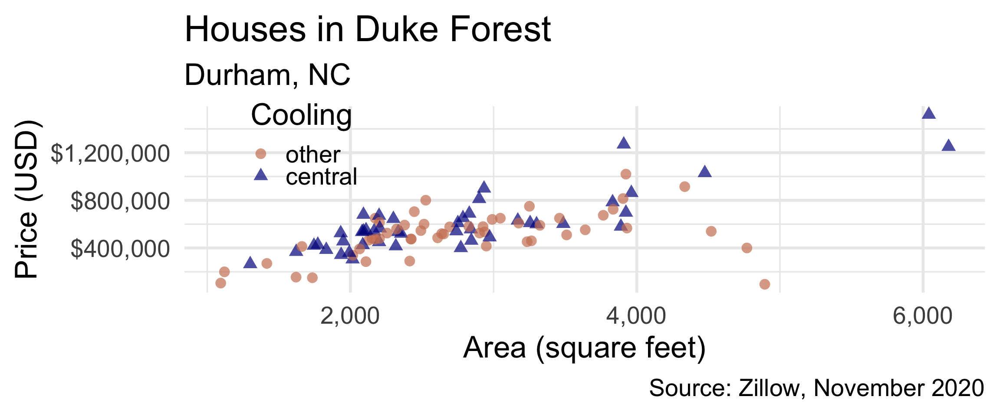
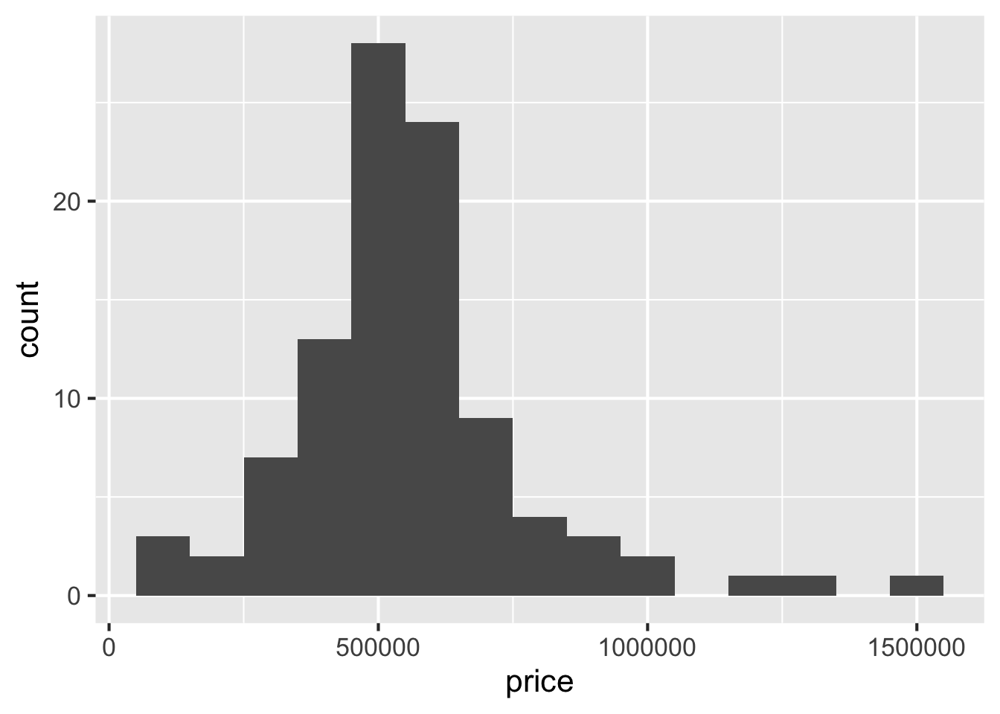
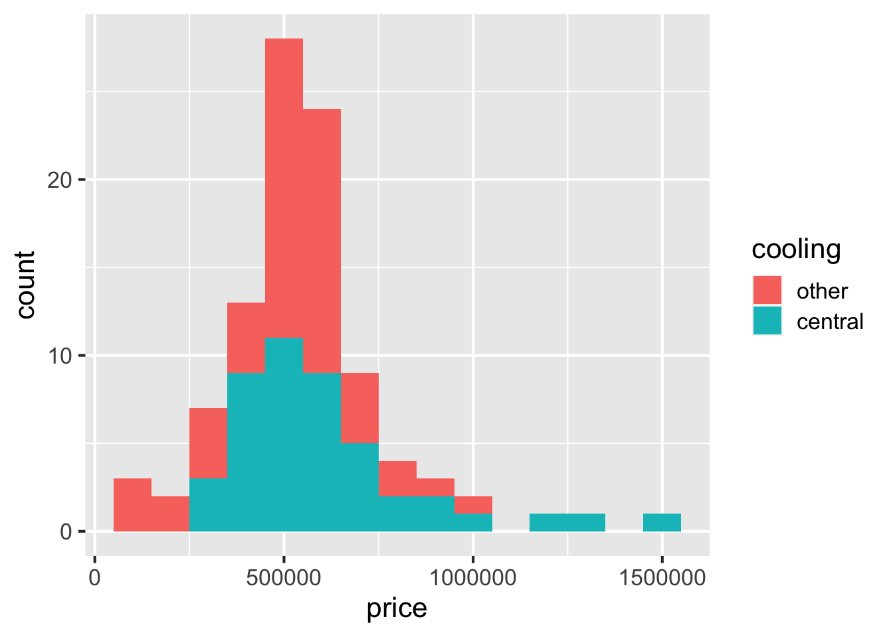
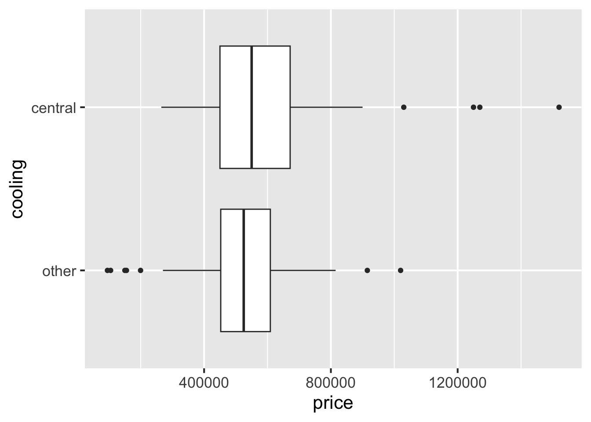
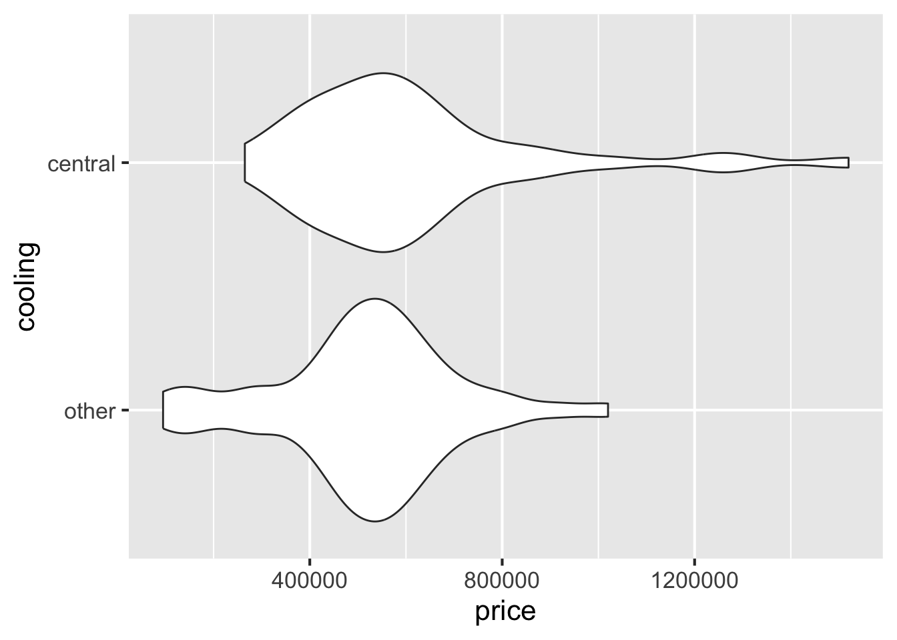
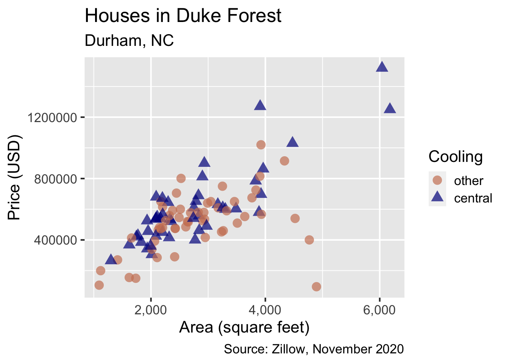
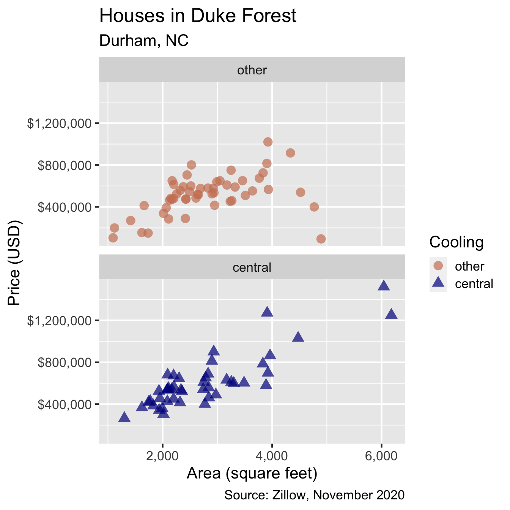

library(tidyverse) # for data wrangling and visualization
library(openintro) # for data
library(scales) # for pretty axis labelsVisualizing and summarizing relationships
Data visualization and transformation
Setup
Packages
Data: Houses in Duke Forest
glimpse(duke_forest)Rows: 98
Columns: 13
$ address <chr> "1 Learned Pl, Durham, NC 27705", "1616…
$ price <dbl> 1520000, 1030000, 420000, 680000, 42850…
$ bed <dbl> 3, 5, 2, 4, 4, 3, 5, 4, 4, 3, 4, 4, 3, …
$ bath <dbl> 4.0, 4.0, 3.0, 3.0, 3.0, 3.0, 5.0, 3.0,…
$ area <dbl> 6040, 4475, 1745, 2091, 1772, 1950, 390…
$ type <chr> "Single Family", "Single Family", "Sing…
$ year_built <dbl> 1972, 1969, 1959, 1961, 2020, 2014, 196…
$ heating <chr> "Other, Gas", "Forced air, Gas", "Force…
$ cooling <fct> central, central, central, central, cen…
$ parking <chr> "0 spaces", "Carport, Covered", "Garage…
$ lot <dbl> 0.97, 1.38, 0.51, 0.84, 0.16, 0.45, 0.9…
$ hoa <chr> NA, NA, NA, NA, NA, NA, NA, NA, NA, NA,…
$ url <chr> "https://www.zillow.com/homedetails/1-L…Price vs. area

Relationship between two numerical variables
Scatterplot
ggplot(duke_forest, aes(x = area, y = price)) +
geom_point()
Correlation coefficient
duke_forest |>
summarize(r = cor(area, price))# A tibble: 1 × 1
r
<dbl>
1 0.667Characteristics of a relationship
between two numerical variables
Direction: Positive
Strength: Moderately strong
Form: Linear

Relationship between a numerical and a categorical variable
Distribution of house prices
ggplot(duke_forest, aes(x = price)) +
geom_histogram(binwidth = 100000)
Filled histograms
ggplot(duke_forest, aes(x = price, fill = cooling)) +
geom_histogram(binwidth = 100000)
Side-by-side box plots
ggplot(duke_forest, aes(x = price, y = cooling)) +
geom_boxplot()
Filled density plots

Violin plots
ggplot(duke_forest, aes(x = price, y = cooling)) +
geom_violin()
Grouped summaries
Multiple summary statistics
duke_forest |>
group_by(cooling) |>
summarize(
min_price = min(price),
median_price = median(price),
iqr_price = IQR(price),
max_price = max(price)
)# A tibble: 2 × 5
cooling min_price median_price iqr_price max_price
<fct> <dbl> <dbl> <dbl> <dbl>
1 other 95000 525000 156500 1020000
2 central 265000 550000 221500 1520000Relationship between two categorical variables
Year built
Create a new variable called year_built_cat that takes on the value "1970 or later" if the house is built in 1970 or later, and "1969 or earlier" otherwise.
. . .
Year built
duke_forest |>
select(contains("year_built"))# A tibble: 98 × 2
year_built year_built_cat
<dbl> <chr>
1 1972 1970 or later
2 1969 1969 or earlier
3 1959 1969 or earlier
4 1961 1969 or earlier
5 2020 1970 or later
6 2014 1970 or later
7 1968 1969 or earlier
8 1973 1970 or later
9 1972 1970 or later
10 1964 1969 or earlier
# ℹ 88 more rowsStacked bar plot – frequencites
ggplot(duke_forest, aes(x = year_built_cat, fill = cooling)) +
geom_bar()
Stacked bar plot – proportions
Frequencies
duke_forest |>
count(year_built_cat, cooling)# A tibble: 4 × 3
year_built_cat cooling n
<chr> <fct> <int>
1 1969 or earlier other 39
2 1969 or earlier central 27
3 1970 or later other 14
4 1970 or later central 18Proportions
duke_forest |>
count(year_built_cat, cooling) |>
group_by(year_built_cat) |>
mutate(prop = n / sum(n))# A tibble: 4 × 4
# Groups: year_built_cat [2]
year_built_cat cooling n prop
<chr> <fct> <int> <dbl>
1 1969 or earlier other 39 0.591
2 1969 or earlier central 27 0.409
3 1970 or later other 14 0.438
4 1970 or later central 18 0.562Relationships between many variables
Price vs. area and cooling - 1

Price vs. area and cooling - 2
Price vs. area and cooling - 3
ggplot(
duke_forest,
aes(
x = area, y = price,
color = cooling, shape = cooling
)
) +
geom_point(alpha = 0.7, size = 4) +
labs(
title = "Houses in Duke Forest",
subtitle = "Durham, NC",
color = "Cooling", shape = "Cooling",
x = "Area (square feet)",
y = "Price (USD)",
caption = "Source: Zillow, November 2020"
)
Price vs. area and cooling - 4
ggplot(
duke_forest,
aes(
x = area, y = price,
color = cooling, shape = cooling
)
) +
geom_point(alpha = 0.7, size = 4) +
scale_color_manual(
values = c("central" = "darkblue", "other" = "lightsalmon3")
) +
labs(
title = "Houses in Duke Forest",
subtitle = "Durham, NC",
color = "Cooling", shape = "Cooling",
x = "Area (square feet)",
y = "Price (USD)",
caption = "Source: Zillow, November 2020"
)
Price vs. area and cooling - 5
ggplot(
duke_forest,
aes(
x = area, y = price,
color = cooling, shape = cooling
)
) +
geom_point(alpha = 0.7, size = 4) +
scale_x_continuous(labels = label_number(big.mark = ",")) +
scale_color_manual(
values = c("central" = "darkblue", "other" = "lightsalmon3")
) +
labs(
title = "Houses in Duke Forest",
subtitle = "Durham, NC",
color = "Cooling", shape = "Cooling",
x = "Area (square feet)",
y = "Price (USD)",
caption = "Source: Zillow, November 2020"
)
Price vs. area and cooling - 6
ggplot(
duke_forest,
aes(
x = area, y = price,
color = cooling, shape = cooling
)
) +
geom_point(alpha = 0.7, size = 4) +
scale_x_continuous(labels = label_number(big.mark = ",")) +
scale_y_continuous(labels = label_dollar()) +
scale_color_manual(
values = c("central" = "darkblue", "other" = "lightsalmon3")
) +
labs(
title = "Houses in Duke Forest",
subtitle = "Durham, NC",
color = "Cooling", shape = "Cooling",
x = "Area (square feet)",
y = "Price (USD)",
caption = "Source: Zillow, November 2020"
)
Price vs. area and cooling - 7
duke_forest |>
group_by(cooling) |>
summarize(r = cor(price, area))# A tibble: 2 × 2
cooling r
<fct> <dbl>
1 other 0.459
2 central 0.854Price vs. area and cooling - 8
ggplot(
duke_forest,
aes(
x = area, y = price,
color = cooling, shape = cooling
)
) +
geom_point(alpha = 0.7, size = 4) +
scale_x_continuous(labels = label_number(big.mark = ",")) +
scale_y_continuous(labels = label_dollar()) +
scale_color_manual(
values = c("central" = "darkblue", "other" = "lightsalmon3")
) +
labs(
title = "Houses in Duke Forest",
subtitle = "Durham, NC",
color = "Cooling", shape = "Cooling",
x = "Area (square feet)",
y = "Price (USD)",
caption = "Source: Zillow, November 2020"
) +
facet_wrap(~cooling, ncol = 1)
Price vs. area and cooling - 9
ggplot(
duke_forest,
aes(
x = area, y = price,
color = cooling, shape = cooling
)
) +
geom_point(alpha = 0.7, size = 4, show.legend = FALSE) +
scale_x_continuous(labels = label_number(big.mark = ",")) +
scale_y_continuous(labels = label_dollar()) +
scale_color_manual(
values = c("central" = "darkblue", "other" = "lightsalmon3")
) +
labs(
title = "Houses in Duke Forest, by cooling type",
subtitle = "Durham, NC",
color = "Cooling", shape = "Cooling",
x = "Area (square feet)",
y = "Price (USD)",
caption = "Source: Zillow, November 2020"
) +
facet_wrap(~cooling, ncol = 1)
Price vs. area and cooling
- The relationship between area and price of homes in Duke Forest is positive and relatively strong, regardless of cooling type.
- The relationship appears to be stronger, with a larger correlation coefficient (0.854 vs. 0.459), for homes cooled with central air.
- However the large difference in correlation coefficients for these two groups might be due to the three potential outliers in the other group with high areas and low price.